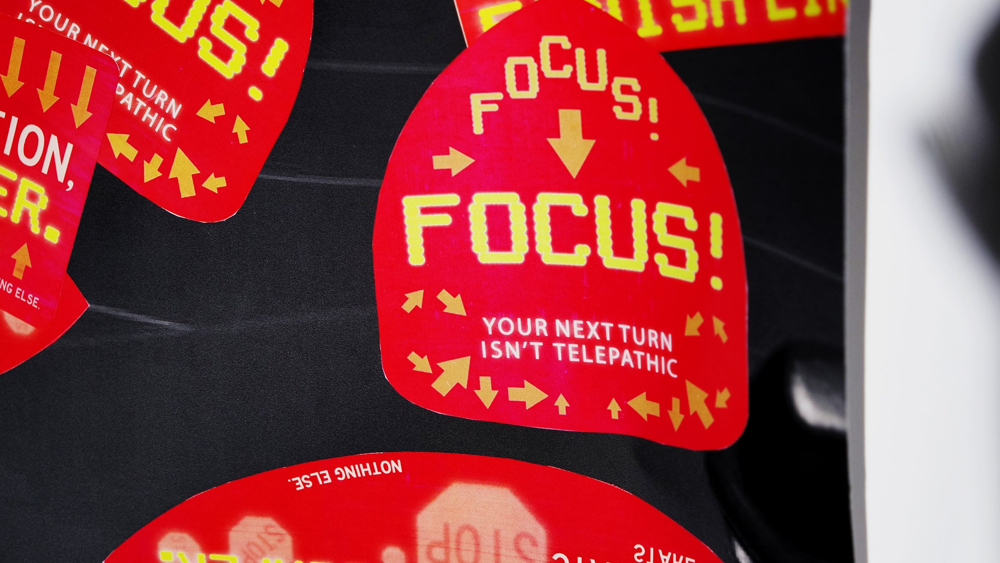
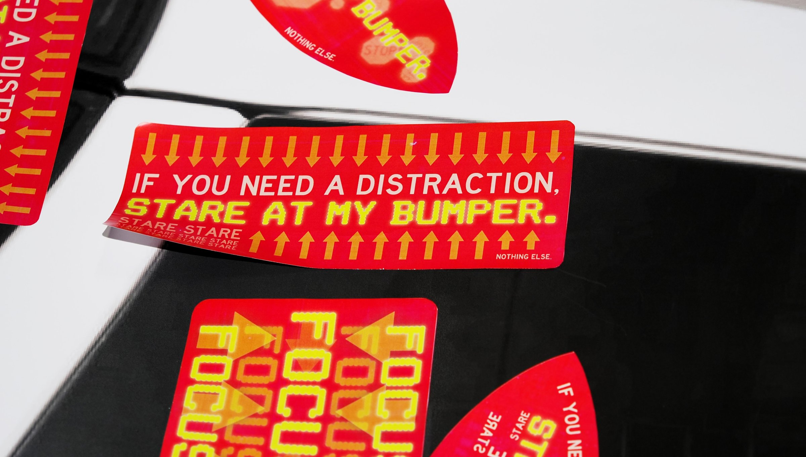
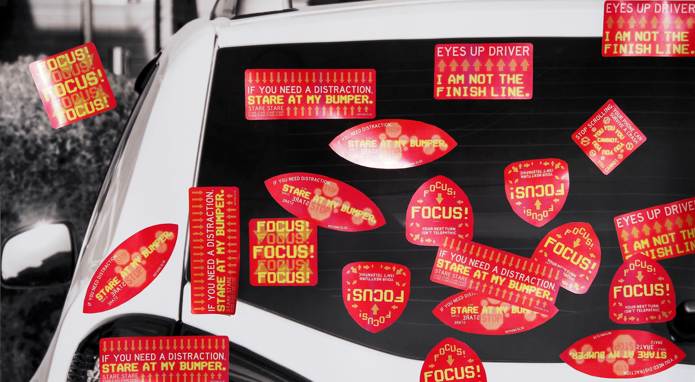

A variation of bumper stickers to be placed and decorated on car rearview mirrors. Aim to “attract” or draw the attention of the driver behind with designs inspired by existing road signs and variable message signs.
